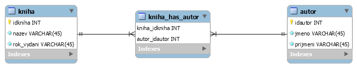

Co se v článku dozvíte ?
Co je to databáze
Databáze jsou místa, kam se ukládají data. Jednoduchým příkladem může být knihovna, kde jsou data uložena podle určitých pravidel a určitého systému. Pokud umíme tento systém používat, otevírají se nám možnosti, jak efektivně vyhledat data podle potřeby.
To tedy znamená, že databáze a její systém slouží k definici dat, která mají být ukládána. Řeší vztahy mezi těmito daty, jakým způsobem je k nim možné přistupovat a jaké operace je s nimi možno provádět. Dále pak funguje jako systém pro řízení přístupu k informacím, řeší kdo má k jakým informacím přístup.
Databázové systémy se nejčastěji využívají k propojení s různými aplikacemi, jako úložiště dat. Používají se, protože zaručují snadný a bezpečný přístup k informacím.
Relační databáze
Relační databáze jsou nejpoužívanější datatáze dnes, kvůli tomu, že jsou snadno pochopitelné a jednoduché k sestrojení. Je tu řada relačních databázových systému např. MySQL, Microsoft Access, MariaDB, Oracle, Firebird a další. Pro webové aplikace je nejpoužívanější MySQL v kombinaci s programovacím jazykem PHP.
Prvky Relační Databáze:
Tabulky (entity)
Tabulky jsou základem relační databáze. Tyto tabulky jsou na sebe nějakým způsobem zavislé, je mezi nimi relace (vzájemný vztah).Tabulky také nazývame jako entity. Entita je objekt reálného světa, která je schopna nezávislé existence, to může být např. zaměstnanec, auto, kniha, zakazník a tak podobně.
Entita může vypadat takto:

Sloupec tabulky (Atribut)
Tabulky se dělí na sloupce a řádky. Sloupce zastupují vlatnosti kontrétní entity (u zamětnance jak mužete vidět v přikladu nahoře to jsou atributy jmeno, prijmeni, email, telefon...). Tyto vlastnosti také nazýváme atributy. Každý atribut musí mít jednoznačný název, rozsah a datavý typ.
Řádky tabulky (záznamy)
Řádky tabulky neboli záznamy jsou jeden konkrétní výpis daných atributů např. u tabulky zákazník by záznam byl.
Klíče
Primární klíč
Primární klíč je atribut, který jednoznačně definuje jednotlivé záznamy. Obvykle bývá nějaké identifikační číslo, které se posouvá o jedno dopředu s každým záznamem. Jak vidíte na obrázku záznamu tak idZakazník je 1, to znamená že další záznam by byl idZakazník 2.
Cizí klíče
Cizí klíč je primární klič z jiné tabulky. Jde o atribut, podle kterého poznáme jaké tabulky jsou spolu v relaci.
Vztahy mezi tabulkami
Vztah 1:1
Tento vztah znamená, že jedné položce z první tabulky odpovída právě jedna položka z druhé tabulky. Jako příkland může sloužit manžetsví (myslím ti u nás v ČR v jiných zemích to muže být jinak).

Vztah 1:N
Tento vztah znamená, že jedné položce z první tabulky může odpovídat více položek z druhé tabulky. Jako příklad použijeme zamětnance a úkol. Jeden zaměstnanec může mít více úkolu a jeden má jednoho zaměstnance.

Vztah M:N
Tento vztah znamená, že více položek z první tabulky může odpovídat více položek z druhé tabulky. Jako přiklad může dát vztah mezi autorem a knihou. Kniha muže mít více autorů a autor může mít více knih. Jak vidíte na obrázku mezi knihou a autorem se vytvořila další tabulka, této tabulce se říká pomocná tabulka a tato tabulka bude zaznamenávat všechny autorovy knihy.
